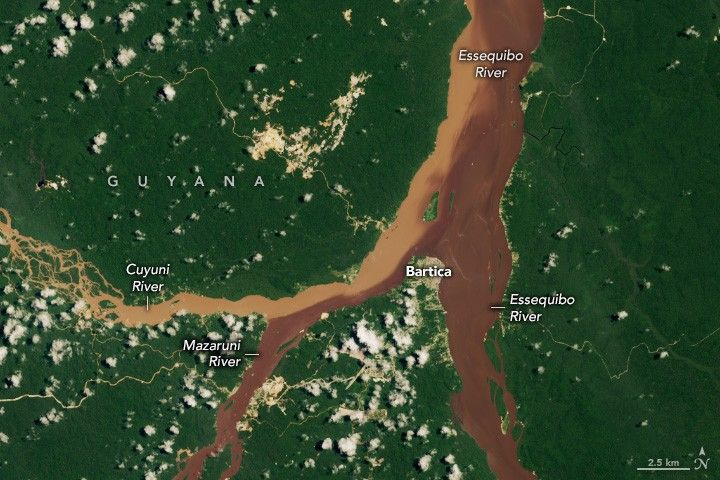

Land of Many Waters and Much Sediment
Guyana, a small country on the northern coast of South America, lies in the heart of the Guiana Shield, a 1.7‑billion‑year‑old geologic feature of hard crystalline rocks such as gneiss and granite. Over time, erosion has chiseled away at the weaker parts of the landscape, shaping sheer cliffs, towering flat‑topped tepuis, and narrow valleys rather than broad, even plains. Guyana’s name itself comes from the Arawak language and means “land of many waters,” reflecting the region’s dense network of rivers and streams.
Remote sensing databases such as HydroSHEDS and HydroATLAS show that the Guiana Shield has a high drainage density—meaning the total length of rivers relative to watershed area is large. Within the country, there are more than 10 major rivers, including some of South America’s most significant waterways.
A satellite image acquired by the OLI (Operational Land Imager) on Landsat 8 on August 16, 2023 highlights the confluence of three of Guyana’s major rivers—the Cuyuni, Mazaruni, and Essequibo—near the town of Bartica, a regional hub often called the “gateway to the interior.”
In the image, the Cuyuni River splits into winding, branching channels separated by long‑lived vegetated islands. This type of channel pattern is known as anastomosing. The darker waters of the Mazaruni and Essequibo are stained by organic tannins from decaying vegetation and carry relatively less suspended sediment, giving them a deep brown color. In contrast, the Cuyuni River appears much lighter brown because it was carrying “enormous” amounts of fine sediment at the time the image was taken—a clear outlier among the three rivers.
Scientists have linked this unusually high sediment load in the Cuyuni to extensive mining upstream. Landsat observations show mining expansion around areas such as Las Claritas and El Dorado in Venezuela, where many gold and diamond mines lie adjacent to the Cuyuni and its tributaries, stirring up sediments and increasing turbidity in the river.
In a study using machine learning techniques on more than 400 of the world’s rivers (using Landsat data from 1984 to 2021), researchers found a sharp increase in sediment loads in the Southern Hemisphere, largely driven by land use changes and mining—especially in tropical regions like the Guiana Shield. In Guyana, the authors reported that mining activities had altered about 50 percent of the country’s total river length. Sediment loads in all three rivers have at least doubled since about 2007, and depending on the season, the Cuyuni can now carry up to ten times as much sediment as before mining became widespread.
The suspended sediments and mining‑related turbidity not only change river color and channel morphology but also affect aquatic habitats and downstream ecosystems. Elevated sediment loads can reduce water quality, impact fish and invertebrate communities, and alter floodplain dynamics. Local communities, such as those in and around Bartica, rely on these rivers for transportation, fishing, and access to interior forests and resources.
In summary, the Guiana Shield’s rugged terrain and high drainage density make it a region of abundant waterways, but human impacts—especially from mining—have significantly altered sediment transport and river conditions in recent decades. Satellite monitoring like that from Landsat continues to offer essential insights into how these changes unfold across both space and time.